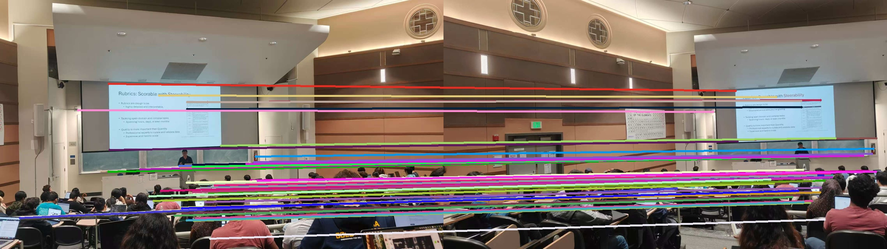
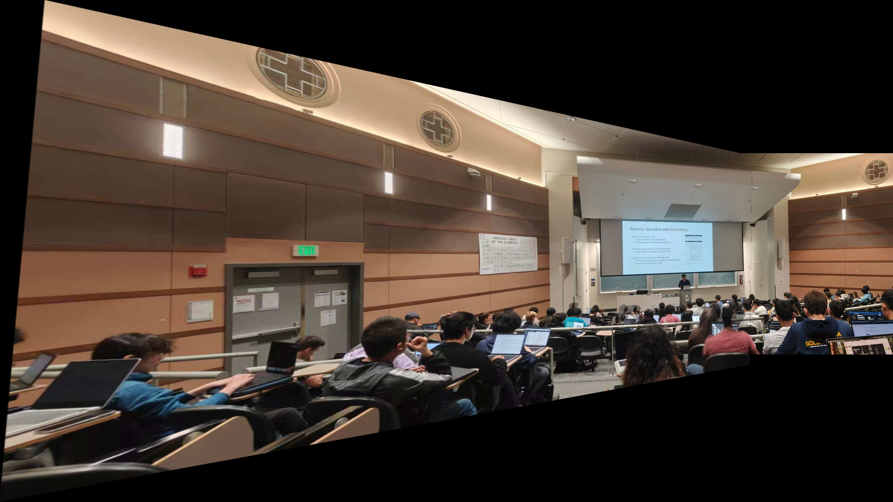

Part B: Feature Matching for Autostitching
Part B.1: Harris Corner Detection
Description: Implemented Harris corner detection to identify interest points in images. Also implemented Adaptive Non-Maximal Suppression (ANMS) to select a well-distributed subset of corners.
My approach: Used the provided harris.py implementation for corner detection. For ANMS, implemented the algorithm to select corners with good spatial distribution by maximizing the minimum distance to stronger corners.
Results: The following shows Harris corners overlaid on images, with and without ANMS.


Description: Implemented Harris corner detection to identify interest points in images. Also implemented Adaptive Non-Maximal Suppression (ANMS) to select a well-distributed subset of corners.
My approach: Used the provided harris.py implementation for corner detection. For ANMS, implemented the algorithm to select corners with good spatial distribution by maximizing the minimum distance to stronger corners.
Results: The following shows Harris corners overlaid on images, with and without ANMS.
Harris Corners - Center Image
Harris Corners - Side Image
ANMS Corners - Center Image
ANMS Corners - Side Image
Harris Corners - Center Image (Group 2)
ANMS Corners - Center Image (Group 2)
Part B.2: Feature Descriptor Extraction
Description: Extracted feature descriptors for each corner point. Following the paper, we extract 8x8 descriptors from 40x40 windows with bias/gain normalization.
My approach: For each corner point, sampled a 40x40 window, applied Gaussian blur, resized to 8x8, and normalized to zero mean and unit variance.
Results: Example extracted feature patches shown below.


Description: Extracted feature descriptors for each corner point. Following the paper, we extract 8x8 descriptors from 40x40 windows with bias/gain normalization.
My approach: For each corner point, sampled a 40x40 window, applied Gaussian blur, resized to 8x8, and normalized to zero mean and unit variance.
Results: Example extracted feature patches shown below.
Feature Patches - Center Image
Feature Patches - Side Image
Feature Patches - Center Image (Group 2)
Feature Patches - Side Image (Group 2)
Part B.3: Feature Matching
Description: Matched feature descriptors between image pairs using Lowe's ratio test to identify good matches.
My approach: For each descriptor in one image, found the two nearest neighbors in the other image and used the ratio of their distances as a threshold to determine good matches.
Results: Feature matches between image pairs shown below.


Description: Matched feature descriptors between image pairs using Lowe's ratio test to identify good matches.
My approach: For each descriptor in one image, found the two nearest neighbors in the other image and used the ratio of their distances as a threshold to determine good matches.
Results: Feature matches between image pairs shown below.
Feature Matches
Feature Matches (Group 2)
Part B.4: RANSAC for Robust Homography
Description: Used RANSAC to compute a robust homography estimate from the feature matches, then applied it to create image mosaics.
My approach: Implemented 4-point RANSAC to estimate homography. Randomly sampled 4 matching point pairs, computed the homography, and counted inliers. Re-estimated using all inliers for the final homography.
Results: Inlier matches and resulting mosaics shown below.


Description: Used RANSAC to compute a robust homography estimate from the feature matches, then applied it to create image mosaics.
My approach: Implemented 4-point RANSAC to estimate homography. Randomly sampled 4 matching point pairs, computed the homography, and counted inliers. Re-estimated using all inliers for the final homography.
Results: Inlier matches and resulting mosaics shown below.
Inlier Matches
Panorama Result

Inlier Matches (Group 2)

Panorama Result (Group 2)
Panorama Result (Group 4)
Panorama Result (Group 5)
Automatic vs Manual Stitching Comparison
Description: Comparison between automatically stitched panoramas (using feature matching) and manually stitched panoramas (from Part A).
My approach: Used the same image sets for both automatic and manual stitching to provide a fair comparison.
Results: Comparison shown below.


Description: Comparison between automatically stitched panoramas (using feature matching) and manually stitched panoramas (from Part A).
My approach: Used the same image sets for both automatic and manual stitching to provide a fair comparison.
Results: Comparison shown below.
Manual Stitching Result (Group 1)
Automatic Stitching Result (Group 1)
Manual Stitching Result (Group 2)
Automatic Stitching Result (Group 2)
Part B.5: Summary
Project completion status:
1. Implemented Harris corner detection and ANMS for feature point selection
2. Extracted 8x8 feature descriptors from 40x40 windows with normalization
3. Implemented feature matching with Lowe's ratio test
4. Implemented 4-point RANSAC for robust homography estimation
5. Created automatic image mosaics from unaligned images
Problems encountered and solutions:
1. Feature matching sometimes produced false matches. Solved by using Lowe's ratio test to filter matches.
2. Homography estimation was sensitive to outliers. Solved by using RANSAC to find the best set of inliers.
3. Some images failed to stitch due to insufficient matches. Improved by adjusting ANMS parameters to get more features.
Comparison with manual stitching:
Manual stitching requires user interaction to select corresponding points, which is time-consuming and error-prone.
Automatic stitching using feature matching is much faster and more robust, especially for multiple images.
However, automatic methods may fail when images have repetitive patterns or low texture.
Future improvements:
1. Add multi-scale processing for corner detection
2. Implement rotation invariance for feature descriptors
3. Add panorama recognition from unordered image sets
Project completion status:
1. Implemented Harris corner detection and ANMS for feature point selection
2. Extracted 8x8 feature descriptors from 40x40 windows with normalization
3. Implemented feature matching with Lowe's ratio test
4. Implemented 4-point RANSAC for robust homography estimation
5. Created automatic image mosaics from unaligned images
Problems encountered and solutions:
1. Feature matching sometimes produced false matches. Solved by using Lowe's ratio test to filter matches.
2. Homography estimation was sensitive to outliers. Solved by using RANSAC to find the best set of inliers.
3. Some images failed to stitch due to insufficient matches. Improved by adjusting ANMS parameters to get more features.
Comparison with manual stitching:
Manual stitching requires user interaction to select corresponding points, which is time-consuming and error-prone.
Automatic stitching using feature matching is much faster and more robust, especially for multiple images.
However, automatic methods may fail when images have repetitive patterns or low texture.
Future improvements:
1. Add multi-scale processing for corner detection
2. Implement rotation invariance for feature descriptors
3. Add panorama recognition from unordered image sets